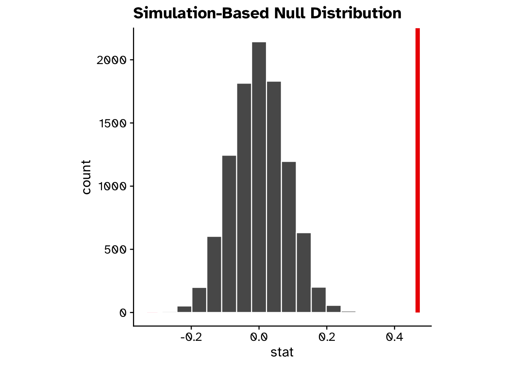
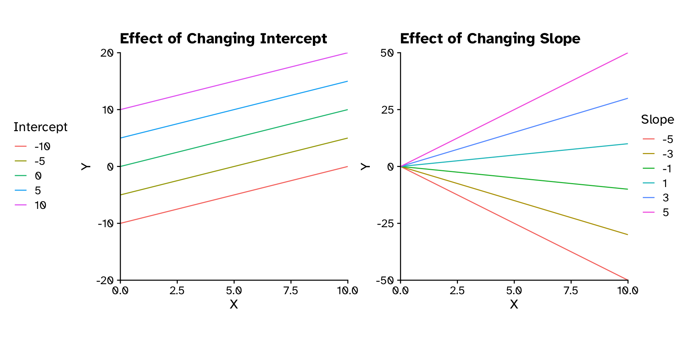
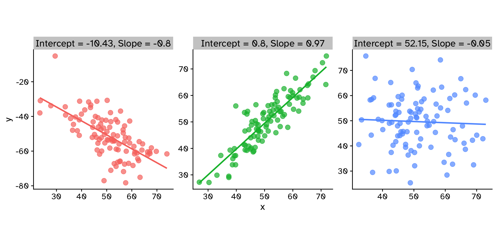
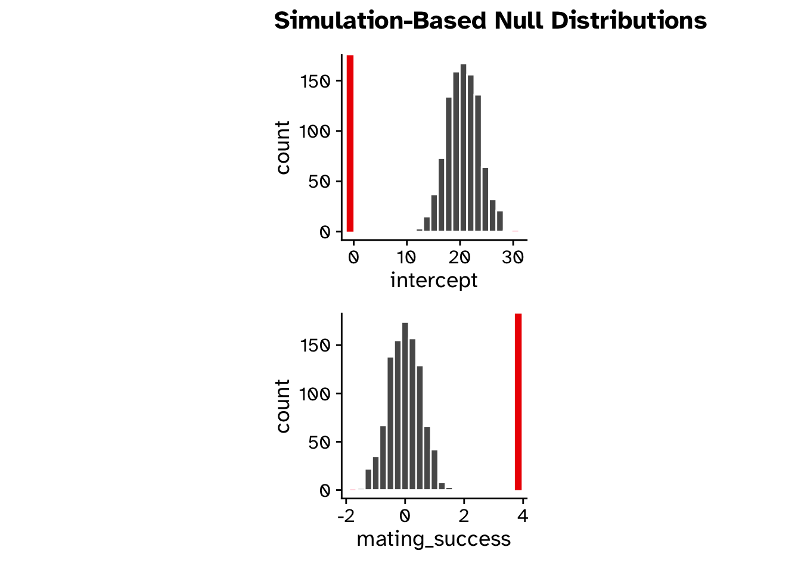

visualize(null_dist) +shade_p_value(obs_stat = observed_correlation, direction ="two-sided")

Correlation
Hypothesis test
null_dist |>get_p_value(obs_stat = observed_correlation, direction ="two-sided")
Warning: Please be cautious in reporting a p-value of 0. This result is an approximation
based on the number of `reps` chosen in the `generate()` step.
ℹ See `get_p_value()` (`?infer::get_p_value()`) for more information.
# A tibble: 1 × 1
p_value
<dbl>
1 0
Remember that our p-value is an approximation
The number of decimal places of accuracy we can observe is directly linked to the number of reps
Regression
Regression
How does variable Y depend on variable X
A mathmatical function describing the relationship between two continuous variables
Y is dependant on X (the)
Y is a function of X
Predictive model
Very powerful framework
Regression
How does variable Y depend on variable X
\[
y = \text{Slope}\times x + \text{Intercept}
\]
\[
y = mx+c
\]
\[
y = \beta_1x+\beta_0
\]
\[
y = \beta_0+\beta_1x+\beta_2x_2+\beta_3x_3+\beta_4x_4+\beta_5x_5
\]
Regression
How does variable Y depend on variable X
# Generate a range of intercept and slope valuesintercepts <-seq(-10, 10, by =5)slopes <-1# Create a grid of intercept and slope combinationsabline_data <-expand.grid(intercept = intercepts, slope = slopes)# Generate a dataset for plottingplot_data <-tibble(x =seq(-10, 10, length.out =100))# Add lines for each intercept and slope combinationabline_data <- abline_data |>rowwise() |>mutate(line_data =list(plot_data |>mutate(y = slope * x + intercept)) ) |>unnest(line_data)# Plot the linesintercept_plot <-abline_data |>ggplot(aes(x = x, y = y, color =as.factor(intercept))) +geom_line() +labs(title ="Effect of Changing Intercept",x ="X",y ="Y",color ="Intercept" ) +coord_cartesian(xlim =c(0, 10), expand =FALSE) +theme(legend.position ="left")# Generate a range of intercept and slope valuesintercepts <-0slopes <-seq(-5, 5, by =2)# Create a grid of intercept and slope combinationsabline_data <-expand.grid(intercept = intercepts, slope = slopes)# Generate a dataset for plottingplot_data <-tibble(x =seq(-10, 10, length.out =100))# Add lines for each intercept and slope combinationabline_data <- abline_data |>rowwise() |>mutate(line_data =list(plot_data |>mutate(y = slope * x + intercept)) ) |>unnest(line_data)# Plot the linesslope_plot <-abline_data |>ggplot(aes(x = x, y = y, color =as.factor(slope))) +geom_line() +labs(title ="Effect of Changing Slope",x ="X",y ="Y",color ="Slope" ) +coord_cartesian(xlim =c(0, 10), expand =FALSE) +theme(legend.position ="right")intercept_plot + slope_plot

Regression
How does variable Y depend on variable X
calculate_stats <-function(data) { model <-lm(y ~ x, data = data) intercept <-coef(model)[1] slope <-coef(model)[2]paste0("Intercept = ", round(intercept, 2), ", Slope = ", round(slope, 2))}stats1 <-calculate_stats(data1)stats2 <-calculate_stats(data2)stats3 <-calculate_stats(data3)# Combine datasets for visualizationdata_combined <-bind_rows( data1 |>mutate(dataset = stats1), data2 |>mutate(dataset = stats2), data3 |>mutate(dataset = stats3))data_combined |>ggplot(aes(x = x, y = y, color = dataset)) +geom_smooth(method ="lm", se =FALSE) +geom_point(alpha =0.7, size =3) +facet_wrap(~dataset, scale ="free") +theme(strip.text =element_text(size =14),panel.background =element_blank() )
`geom_smooth()` using formula = 'y ~ x'

Regression
How does variable Y depend on variable X
Example: For sexual selection to operate, an increase in mating success (number of mates) must result in an increase in reproductive success (number of offspring).
set.seed(123)# Generate two positively correlated variablesx <-rlnorm(100, meanlog =log(5), sdlog =log(1.5))y <-4* x +rnorm(100, mean =0, sd =10)# Combine into a tibblemating_data <-tibble(x =round(x, 0), y =round(y, 0)) |>mutate(y =if_else(x <6, y - (y -10) *0.2, y)) |>mutate(y =if_else(y <0, 0, y))# Visualize the relationshipsex_plot <-mating_data |>ggplot(aes(x = x, y = y)) +geom_point(alpha =0.5, size =3) +geom_smooth(method ="lm", se =FALSE) +labs(x ="Mating success", y ="Reproductive success")sex_plot
For each additional mate, an individual (on average) gains \(\beta_1\) additional offspring
For 5 mates (\(x=5\)):
\(y = 3.83\times5-0.68\)
\(y = 18.47\)
sex_plot
`geom_smooth()` using formula = 'y ~ x'
Regression
How does variable Y depend on variable X
# Fit a linear modeldata1 <-slice_sample(data1, n =20)# Create a second dataset with a poorly fitting linemodel1 <-lm(y ~ x, data = data1)# Add residuals and squared residuals to the first datasetdata_with_residuals1 <- data1 |>mutate(fitted =predict(model1),residual = y - fitted,squared_residual = residual^2 )model2 <-lm(y ~ x, data = data1)model2$coefficients[1] <--10model2$coefficients[2] <-1.3# Add residuals and squared residuals to the second datasetdata_with_residuals2 <- data1 |>mutate(fitted =predict(model2),residual = y - fitted,squared_residual = residual^2 )# Plot the data with squared residualsdata_with_residuals1 |>ggplot(aes(x = x, y = y)) +geom_point(alpha =0.7, size =3) +geom_line(aes(y = fitted), color ="blue", linetype ="solid", linewidth =2) +coord_cartesian(xlim=c(20,80), ylim=c(20,80))
visualize(null_dist) +shade_p_value(obs_stat = observed_fit, direction ="two-sided")

Regression
Hypothesis test
null_dist |>get_p_value(obs_stat = observed_fit, direction ="two-sided")
Warning: Please be cautious in reporting a p-value of 0. This result is an approximation
based on the number of `reps` chosen in the `generate()` step.
ℹ See `get_p_value()` (`?infer::get_p_value()`) for more information.
Please be cautious in reporting a p-value of 0. This result is an approximation
based on the number of `reps` chosen in the `generate()` step.
ℹ See `get_p_value()` (`?infer::get_p_value()`) for more information.
# A tibble: 2 × 2
term p_value
<chr> <dbl>
1 intercept 0
2 mating_success 0
Regression
Multiple regression
\[
y = \beta_1x+\beta_0
\]
\[
y = \beta_0+\beta_1x+\beta_2x_2+\beta_3x_3+\beta_4x_4+\beta_5x_5
\]
data |>specify(reproductive_success ~ mating_success + sex + feather_colour) ...